As funções orgânicas surgiram quando se observou experimentalmente que os compostos orgânicos podem ser divididos em grupos, de acordo com um conjunto de propriedades químicas semelhantes entre si e diferentes das substâncias de outros grupos.
Por exemplo, várias substâncias pertencem à função orgânica álcool porque todas têm um OH (hidroxila) na estrutura. Por causa dessa característica, compartilham propriedades — todas podem ser oxidadas pelo dicromato de potássio e todas fazem ligação de hidrogênio —, ainda que sejam compostos completamente diferentes.
As propriedades químicas (e algumas físicas) dos compostos orgânicos devem-se à presença ou ausência, na molécula, de um determinado grupo funcional: um conjunto de um ou mais átomos ligados de uma maneira específica. Substâncias com apenas carbono e hidrogênio são pouco ácidas; se um dos hidrogênios for substituído por OH, a acidez aumenta consideravelmente. O OH é, então, um grupo funcional.
Aqui no QuímicaEZ separamos algumas das principais funções orgânicas para você diferenciá-las com clareza: hidrocarbonetos, álcoois, enóis, fenóis, éteres, cetonas, aldeídos, ácidos carboxílicos, anidridos, aminas e amidas.
02.1Hidrocarbonetos
É quando temos uma molécula apenas com átomos de hidrogênio e carbono, unidos tetraedricamente e na maioria das vezes em ligação covalente. Todos os compostos com essas características são denominados hidrocarbonetos.
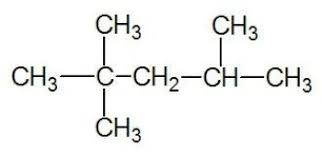
02.2Álcool
É toda substância que contém um ou mais grupos hidroxila (OH) ligados predominantemente a átomos de carbono saturado.
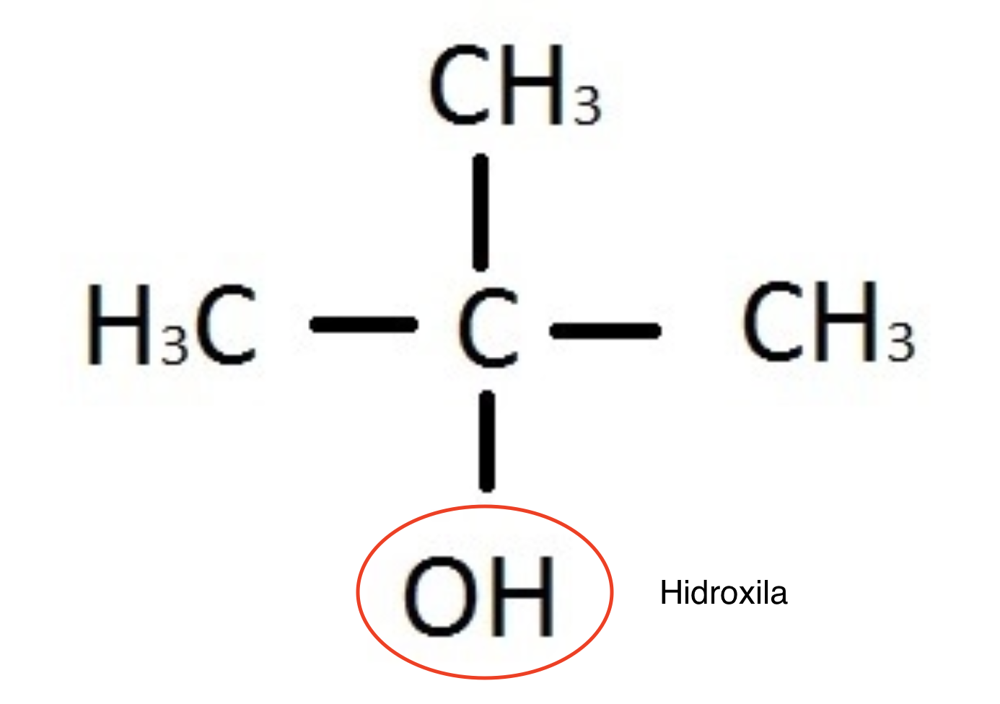
02.3Enol
Os enóis têm a mesma estrutura que os álcoois, porém sua hidroxila (OH) está ligada a um carbono insaturado.
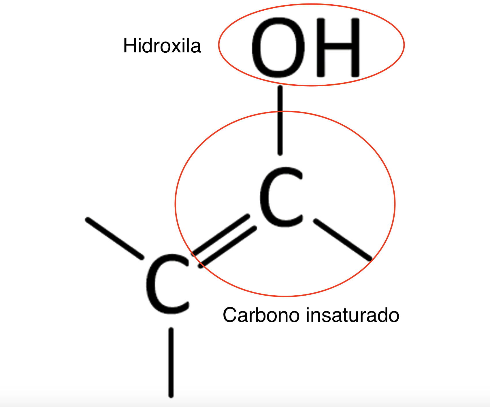
02.4Fenol
O fenol é uma das funções orgânicas mais fáceis de reconhecer: sua estrutura essencial é composta por uma ou mais hidroxilas ligadas a um anel aromático.
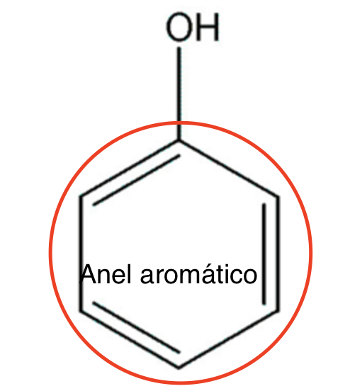
02.5Éter
Éteres são usados como solventes de óleos, gorduras e resinas e na fabricação de seda artificial. Em sua fórmula, a característica principal é um átomo de oxigênio entre dois átomos de carbono.
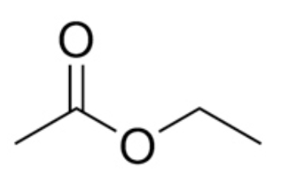
02.6Cetona
A cetona mais comum é a propanona, mais conhecida como acetona. É usada como solvente de esmaltes, graxas, vernizes e resinas. Seu grupo funcional é a carbonila, também conhecida como “C dupla O”.
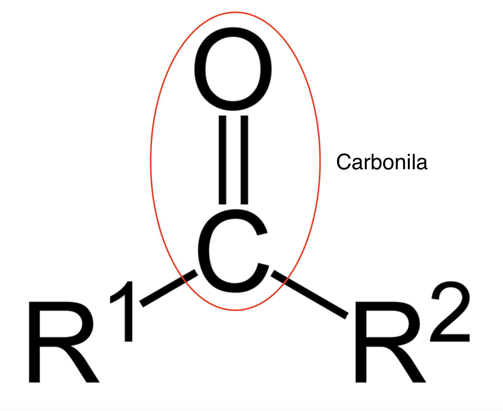
02.7Aldeído
Os aldeídos são usados na fabricação de desinfetantes e plásticos e são importantes em estudos científicos, servindo até para conservação de cadáveres. Têm o mesmo grupo funcional que a cetona e fórmula geral R-CHO, em que R é um radical alquila ou arila.
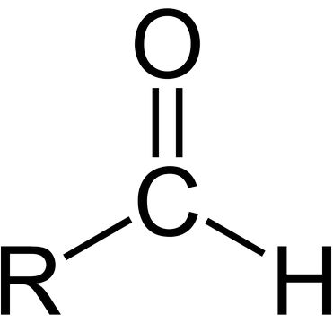
02.8Ácido carboxílico
O grupo funcional do ácido carboxílico é um tanto complexo, pois reúne a hidroxila e a carbonila. Por isso, é uma das funções mais cobradas em vestibulares.
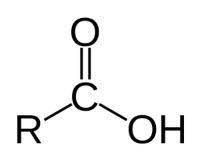
02.9Anidridos
Os anidridos orgânicos são compostos derivados da desidratação intermolecular de ácidos carboxílicos. No grupo funcional dos anidridos temos duas carbonilas unidas por uma ligação simples a um átomo de oxigênio.
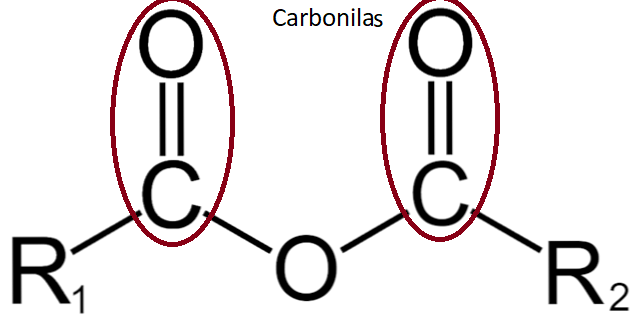
02.10Aminas
As aminas são compostos derivados da amônia (NH3) pela substituição de um ou mais hidrogênios por grupos orgânicos. O grupo funcional é o nitrogênio ligado a átomos de carbono.
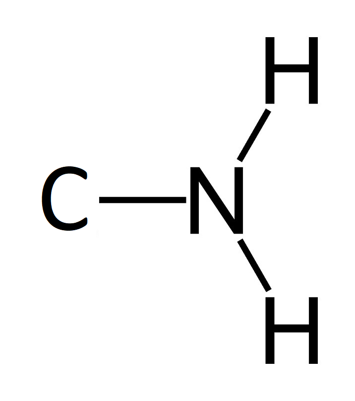
02.11Amida
As amidas são compostos orgânicos presentes no nosso corpo quando falamos de aminoácidos, dependendo da forma em que os encontramos. Sua estrutura não é muito diferente das aminas — a diferença é que, na amida, o nitrogênio precisa estar ligado a uma carbonila.
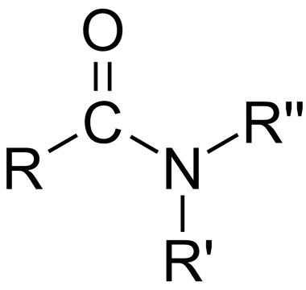